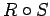

Inhalt Index DeskTop Bronstein

 Algebra und Diskrete Mathematik Fuzzy-Logik Fuzzy-wertige Relationen Fuzzy-Relationenprodukt
Algebra und Diskrete Mathematik Fuzzy-Logik Fuzzy-wertige Relationen Fuzzy-Relationenprodukt


Für die Verknüpfung unscharfer Relationen gelten die folgenden Gesetzmäßigkeiten:
| (5.399) |
| (5.400) |
| (5.401) |
| (5.402) |
| (5.403) |
| (5.404) |
| Beispiel A |
|
Die Gleichung (5.396) für das Relationenprodukt  wurde entsprechend wie bei der Durchschnittsbildung mittels der min-Operation definiert. Allgemeine Überlegungen zeigen, daß statt der min-Operation irgendeine der t-Normen verwendet werden kann. |
| Beispiel B |
|
Für die Vereinigungs-, Durchschnitts- und Komplementbildung bezüglich |